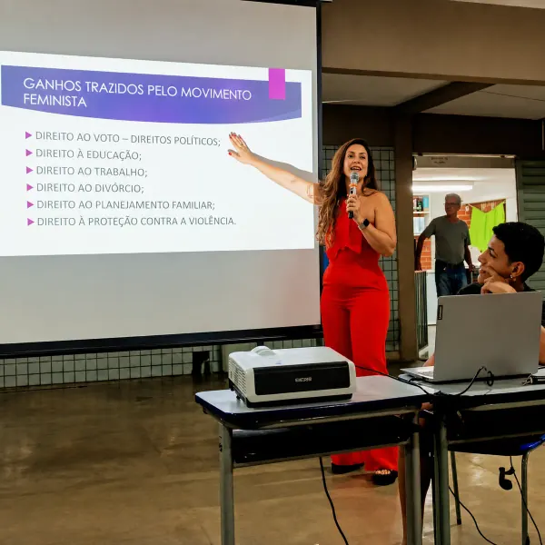
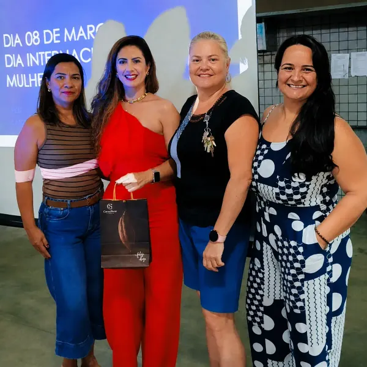
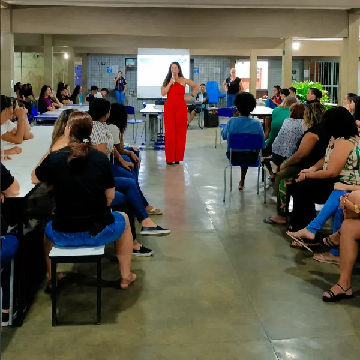
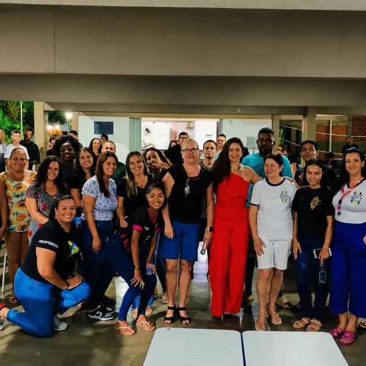
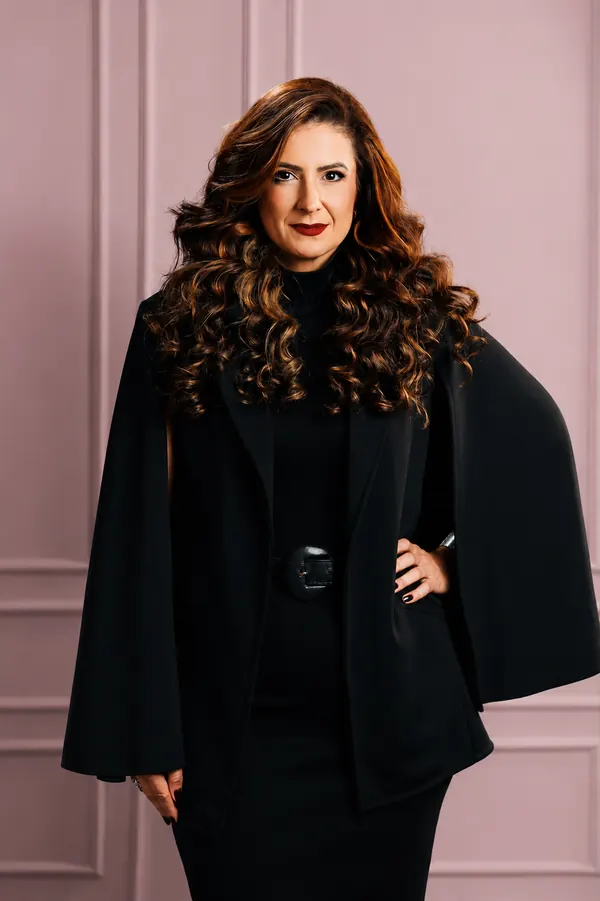

Primeiro contato pelo WhatsApp para entender o caso e direcionar os próximos passos.
Advocacia humanizada e estratégica
Advogada em Muriaé/MG para ajudar você a encontrar o caminho jurídico do seu momento.
Uma experiência interativa para orientar o primeiro passo. Responda algumas perguntas, veja a área indicada e fale com a Dra. Larissa com mais clareza sobre o que precisa.
Atendimento em todo o Brasil
Orientação jurídica com base em Muriaé e alcance nacional.
A Dra. Larissa Cerqueira atende clientes de diferentes cidades do Brasil pelo WhatsApp, organizando o primeiro contato de forma clara e responsável. Para quem está em Muriaé e região, o atendimento presencial pode ser combinado previamente.
As consultas jurídicas são realizadas mediante agendamento e possuem honorários, conforme a Tabela da OAB/MG. O primeiro contato pelo WhatsApp serve para entender sua necessidade e agendar a consulta.
Atendimento presencial mediante agendamento no Centro de Muriaé.
Centro, Muriaé/MG - 36.880-001
Abrir rota



Palestras e ações educativas
Informação e conscientização sobre os direitos das mulheres.
Em ações realizadas em escolas e espaços comunitários, Larissa leva conhecimento jurídico de forma clara, aproximando a comunidade de temas que fortalecem cidadania, proteção e responsabilidade social.
A palestra abordou direitos conquistados pelo movimento feminista, proteção contra a violência, igualdade entre homens e mulheres e o papel da informação na transformação da sociedade.
Ver publicação no InstagramOrientação inicial
Responda como se fosse uma conversa inicial.
Você não precisa saber o nome da área jurídica. Basta escolher a situação que está vivendo e, em três passos, entender por onde começar.
Etapa 1 de 3
O que melhor descreve o seu momento?
Etapa 2 de 3
Qual é o nível de urgência?
Etapa 3 de 3
Como você prefere ser atendido?
Direcionamento inicial
Área indicada
Este direcionamento é apenas uma referência inicial e não substitui a consulta com a advogada.
Próximo passo: agendar uma consulta jurídica (paga). Valores e horários são informados no primeiro contato.
Mapa de ajuda
Encontre o tema que mais se parece com a sua situação.
Toque em um tema para ver, em poucas palavras, como a Dra. Larissa pode orientar você nessa área.
Direito de Família
Quando a decisão envolve afeto, patrimônio e futuro.
Orientação para divórcio, guarda, pensão, inventário e organização de acordos familiares, com cuidado e estratégia.
01
Escuta
O atendimento começa por uma escuta ativa, com análise do que é importante para você.
02
Estratégia
Cada caso recebe uma leitura própria, com avaliação cuidadosa dos riscos e dos caminhos jurídicos possíveis.
03
Defesa
Atuação técnica na defesa de direitos, com firmeza e responsabilidade.
Conteúdo inteligente
Dúvidas frequentes respondidas com clareza.
Perguntas comuns recebem uma orientação inicial, sem substituir a análise individual do caso. Quando fizer sentido, o próximo passo é conversar pelo WhatsApp.
Tenho direito à pensão?
A pensão depende da necessidade de quem pede, da possibilidade de quem paga e das provas do caso. A orientação jurídica ajuda a calcular, pedir, revisar ou cobrar valores.
Conversar sobre pensãoComo proteger uma pessoa idosa?
Quando existe abuso, negligência, conflito familiar ou risco ao patrimônio, é possível avaliar medidas de proteção, curatela, orientações aos familiares e providências urgentes.
Conversar sobre pessoa idosaQuando fazer inventário?
O inventário deve ser analisado após o falecimento para organizar bens, dívidas e herdeiros. Dependendo do caso, pode ser feito de forma judicial ou em cartório.
Conversar sobre inventárioCobrança abusiva: o que fazer?
Guarde comprovantes, mensagens, contratos, boletos e prints. A análise jurídica verifica se houve abuso, cobrança indevida, negativação irregular ou falha na prestação do serviço.
Conversar sobre cobrançaComo organizar um acordo?
Um acordo precisa deixar claro quem assume cada obrigação, prazos, valores, documentos e consequências em caso de descumprimento. A formalização evita novos conflitos.
Conversar sobre acordoA consulta é paga?
Sim. Cada consulta envolve análise individual do seu caso, orientação técnica e responsabilidade profissional. Por isso, ela é cobrada conforme a Tabela de Honorários da OAB/MG. Valores e formas de pagamento são informados no agendamento. Cancelamentos devem ser avisados com 24h de antecedência.
Agendar uma consultaTransparência desde o início
Como funciona o atendimento
Três etapas claras, para você saber o que esperar antes de cada uma.
-
Primeiro contato
Sem custoEnvie um resumo da sua situação pelo WhatsApp.
-
Consulta jurídica
PagaAgendamos um horário para analisar seu caso. O valor segue a Tabela da OAB/MG e é informado no agendamento.
-
Proposta de atuação
Por escritoSe for necessário atuar no caso, você recebe uma proposta de honorários por escrito.

Contato
Depois do primeiro clique, o próximo passo é conversar.
Envie uma mensagem com o resumo do caso. O atendimento pode ser alinhado pelo WhatsApp e, quando necessário, realizado presencialmente em Muriaé.
As consultas jurídicas são realizadas mediante agendamento e possuem honorários, conforme a Tabela da OAB/MG. O primeiro contato pelo WhatsApp serve para entender sua necessidade e agendar a consulta.
Av. Juscelino Kubitschek, 1.349, sala 101Centro, Muriaé/MG - 36.880-001